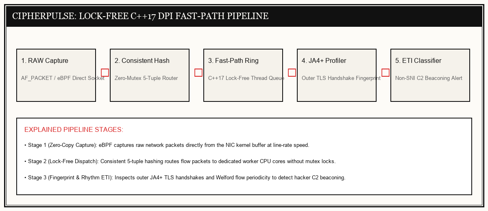

DISPATCH B — SYSTEMS ENGINEERING REPORT
CipherPulse
Multi-Threaded C++ Engine for Encrypted Traffic Intelligence & Line-Rate Inspection
C++17, eBPF, Lock-Free Ring Buffers, JA4+ Fingerprinting
Encrypted Traffic Blindspots
Over 95% of modern internet traffic is encrypted (HTTPS / TLS 1.3). Threat actors hide Command and Control (C2) channels inside encrypted tunnels. Traditional Deep Packet Inspection (DPI) requires costly SSL decryption, breaking privacy and degrading throughput.
Lock-Free Fingerprint & Rhythm DPI
CipherPulse inspects packets at line-rate without decrypting payload content. By combining outer JA4+ client fingerprints with Welford online flow statistics (tracking metronome-like C2 beaconing rhythms), it classifies encrypted threats at 100k+ packets per second.
100k+
ZERO
100%
ZERO
Lock-Free 5-Tuple Fast-Path Inspection Pipeline

Live Encrypted Traffic Forensic Workbench
Select a network connection stream to observe real-time JA4+ fingerprint extraction and threat classification:
| Timestamp | Network Connection | JA4+ Fingerprint Hash | Traffic Rhythm | Security Verdict | Action Taken |
|---|---|---|---|---|---|
| 18:36:01 | 192.168.1.45 → Google:443 | t13d151600_8daaf6152702 |
Random human interaction timing | SAFE (BENIGN) | Allowed |